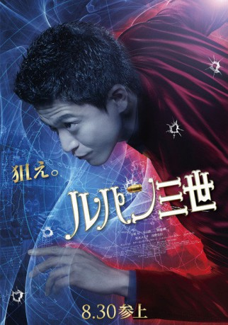

IMDB-Wertung: 5.7 / 10
IMDB-Wertung: 5.7 / 10  Metascore:
Metascore: 
Interpol Inspector Zenigata begins a world-wide hunt for the infamous thief Arsene Lupin III.
 IMDB-Wertung: 5.7 / 10 Metascore:
Interpol Inspector Zenigata begins a world-wide hunt for the infamous thief Arsene Lupin III.
Jahr: 2014
Dauer: 133 Minuten
FSK: 16
Land: Japan Studio: Splendid FilmTonspuren:
Untertitel: Deutsch,
Auflösung: 1080p (1920x808) Größe: 5498 MB
Genre: Action, Komödie, Abenteuer
Regisseur: Ryûhei Kitamura
Drehbuch: Monkey Punch, Mataichirô Yamamoto, Mataichirô Yamamoto, Ryûhei Kitamura, Joey O'Bryan
Soundtrack: Aldo Shllaku
Darsteller:
 Tadanobu Asano als Inspector Zenigata
Tadanobu Asano als Inspector Zenigata Nick Tate als Dawson
Nick Tate als Dawson Vithaya Pansringarm als Naron
Vithaya Pansringarm als Naron Sahajak Boonthanakit als Head of Security
Sahajak Boonthanakit als Head of Security Nirut Sirichanya als Pramuk
Nirut Sirichanya als Pramuk Shun Oguri als Arsene Lupin III
Shun Oguri als Arsene Lupin IIIDatei: X:\HD-Eastern-Modern(A-M)\Lupin the Third - Der Meisterdieb (2014, FSK, 1920x808).mkv seit 30.06.2015
Festplatte: HD Eastern+Western
 Es gibt insgesamt 104 Filme in der Gruppe 'HD-Eastern-Modern(A-M)'
Es gibt insgesamt 104 Filme in der Gruppe 'HD-Eastern-Modern(A-M)'